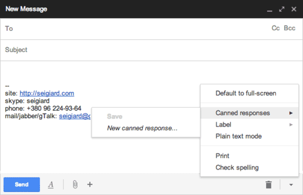
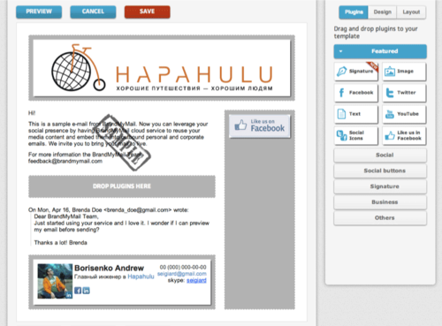
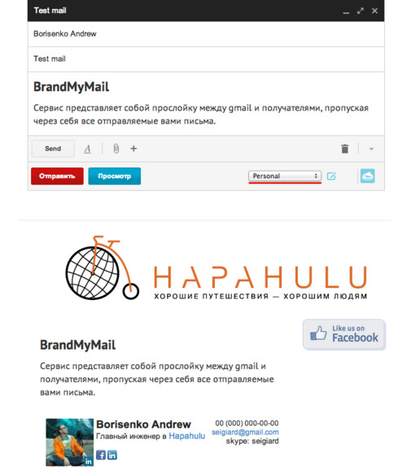
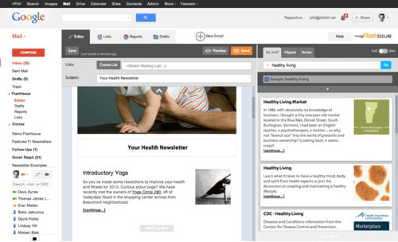

В процессе тотального обрендирования нашего агентства самостоятельных безопасных путешествий «Hapahulu» появилась идея беседовать с клиентами посредством тематически оформленных писем.
Мол, информацию о билетах присылать в письме, выглядящим, как авиабилет, а переписку вести в шаблоне с логотипом и фирменным подвалом.
Задача «как сделать шаблоны писем в gmail» ясна. Начинаем поиски в родственнике gmail — гугле.
И первый, самый массовый вариант решения — это подключить в gmail-лаборатории функционал «Шаблоны ответов»

Шаблоны можно сохранять, вставлять в письма и удалять. Можно даже использовать шаблоны ответов в фильтрах писем.
Вывод: удобно для автоматизации работы, но возможности персонификации тут ограничены только возможностью задать шрифт и вставить картинку.
Хотя кто говорит, что минимализм — это плохо?
Сервис представляет собой расширение для браузера и является посредником между Gmail и получателями, пропуская через себя все отправляемые вами письма и «оборачивая» их в выбранный шаблон.
На сайте сервиса у вас есть возможность создавать шаблоны писем, которые гибко настраиваются:
После создания шаблона не забудьте сохранить его и переходите в Gmail.

В Gmail работа с шаблоном отличается простотой и удобством: после установки расширения для Chrome внизу окна для написания писем появляется выпадающий список, какой шаблон применить к письму.
После отправки сообщения, оно уходит на сервер BrandMyMail, вставляется в выбранный шаблон и красиво оформленное письмо переправляется получателю.

Важно отметить, что BrandMyMail предоставляет статистику по созданным шаблонам: сколько человек открыло письма и сколько перешло по ссылкам. Это очень удобно для отслеживания CTR ваших посланий.
При бесплатном использовании существует лимит в 100 сообщений в месяц и только 30 почтовых плагинов. А за 40$ в год пользователь получает все возможности сервиса, расширеную статистику и убирает из письма ссылку на сам сервис.
Вывод: удобный сервис с большими возможностями для брендирования своих писем.
На просторах сети был найден еще один интересный сервис создания писем и управления рассылками в вашем Gmail.
Причем сервис может использоваться как отдельное веб-приложение, так и встраиваться в Gmail в виде плагина для браузера Chrome.

Все его возможности описывать очень и очень долго, поэтому просто посмотрите видео.
Но были найдены и минусы:
Вывод: если вы часто делитесь с подписчиками найденными материалами — это для вас. Удобнейшая система коллекционирования материала и простой и понятный интерфейс написания письма облегчат работу с рассылками. Для более профессиональной работы есть сервисы работы с подписками, как тот же MailChimp.
Брендирование писем в Gmail — до сих пор незанятая ниша.
Для сторонников минимализма можно настроить шаблон шапки письма через «Шаблоны ответов» и красивую подпись.
Есть нужно что-то помощнее — BrandMyMail.com в помощь, благо он прост и удобен в использовании.
Если вы регулярно рассылаете группе подписчиков новостные дайджесты из найденного на просторах сети — попробуйте Flashissue.com. Но с брендированием он сильно не поможет.